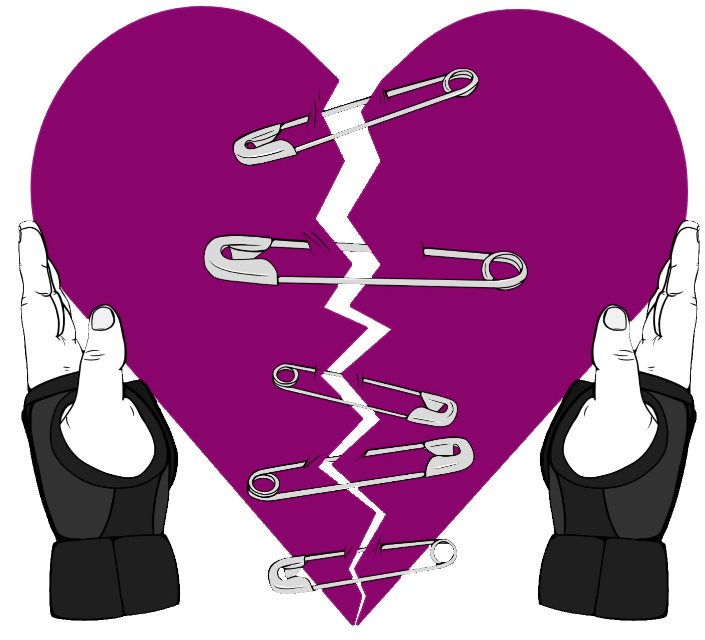

Pack Is Near
A Peer-Led Support Group for Injured and Grieving Roller Derby Skaters What is PIN
Pack Is Near (PIN) is a non-hierarchical, self-help group for skaters that are grieving the loss of an important aspect of their roller derby identity, be it through injury, medical reasons, or any circumstances that keep them away from the progress they have envisioned, the track and the roller derby community. PIN welcomes all, no matter their roller derby experience and skills, no matter how big the issue they’re dealing with. We provide a safe space to tell your story and express your emotions, to relate to other people’s experiences, and to empower each other through mutual help.
Why we do this?
We want to create a safe space where skaters can share their experience with injury, trauma, grief, and coping mechanisms. Every grieving skater has a unique story, but our struggles are more common than we think. Sharing personal thoughts and stories about our injuries helped us, the group founders, feel less isolated, and being able to provide support for others has made us feel empowered and in control over our story. While waiting to get back on track, this group is our small contribution to the roller derby community, and especially for the members that become invisible when they stay off the track for too long.
How does it work?
As moderators we will provide an online space that we organize and manage, but all participants are equal during the meeting. Group members can share experiences, tell their story, get support and validation, but we do not give advice.
The current format we propose are monthly online meetings in small groups of maximum 6 people. A meeting lasts 1h30 with 15 minutes introduction, check in, and topics that we would like to discuss, maximum 2 per meeting. The next hour will be dedicated to sharing our stories and experiences on the selected topic(s). The last 15 minutes are for a wrap up and check out. During the meetings, all participants are required to abide by the group’s chart of conduct and the WFTDA chart of conduct as applicable.
Being a member of the group and participating in the meetings is completely free of charge. We simply provide this safe space as part of our own healing process. Signing up for the meetings will open 2 weeks before the start of the meeting date. Signing up is on a first come, first served basis. Participation is anonymous and to abide by this only one person per league will be invited in every meeting.
Please keep in mind that this is our first attempt to organize a self-help group, and there will be some trials, errors and calibration in the process. All feedback about the meeting's structure and format is highly encouraged after the meeting.
Check out the timeline we have set for the first meeting (link).
Who are we?
Bojana - Sto101 - (she/her)
I have been a nerdy couch potato my whole life, until I discovered roller derby in late 2016. Within a year I became an active, outgoing, sporty person, and would seize any opportunity to improve my skating skills and overall physical condition. My (paid) career at the University has led me to live in places that do not have roller derby, and for six years I did my best to keep in shape, revise the rules, travel 2h30 one way for a practice with the closest team, join rosters of small leagues when they were missing skaters for bouts, join scrimmages as independent skater, apply as an official whenever I could. I tried other sports, even broke my finger trying out American football, but nothing compared to the rush I got from roller derby. In 2024 I finally moved to a city with a roller derby team, joined their coaching squad, and started to get ready for the Czech Roller Derby Team intakes. In October 2024 I broke my ankle and shattered all my plans about having a big breakthrough in my roller derby journey. While the physical healing process has been a consistent progress, the mental recovery has been harder than what I have anticipated, and I still have a long way to go before I feel contact-ready.
Veronika - Sin Bin Queen - (she/her)
My interests were always commented as “unusual for a girl”. I have never been a sports person even though I quite enjoyed PE lessons at school. I was not going to any sports club when I was a kid, nor was I having any after school activities either. Therefore it is still quite hard for me to develop habits. I tried pole dancing before but I was really bad at showing up at the practices. So I have been “doing” the pole dance for many years but my progress was not really something to talk about. I got to the roller derby because of my long time friend but I always thought that this sport is not for me. How very mistaken I was! It changed after I saw the first first bout that I hesitatedly admitted that the palpable atmosphere of friendship is something I would like as well. Firstly I was dealing with my low attendance as before. But finding a place that accepts that sometimes your life can be a mess, a place where no one is commenting on your body, a place where I could identify with various body types which was completely opposite from my pole dance experience. That was the thing that solved my problem with attendance. I was going on the trainings regularly, I even took up the gym sessions twice a week. Since I know that concerning the body, I am more of a slow learner, I started to officiate to train my brain for roller derby as well. And all this effort started to show. It really changed my own perception of myself. Now I started to think about myself as a sports person. And just at the time when I started playing, I sprained my ankle. So I took some time to heal. And I was preparing for another game. And I have broken my leg in such a way that it left me unable to take basic care for myself for some time. It took out my autonomy. Yes, the healing is progressing as it should. But I have never even imagined the mental impact on one self mind. And I started to realise that I cannot be in this alone. That there are other people experiencing something similar. So that's why I am here. I fell in love with roller derby after I was dragged to watch a bout by a very good friend. The palpable atmosphere of friendship is what got me, but when I joined the team I was struggling with attendance. After all, I never had the chance to build healthy sporting habits as a child. But finding a place that accepts that life is sometimes messy, a place where body positivity is the norm and where I could see various body types, was a complete opposite of my previous experience in sport, especially pole dance. The supportive environment and positive image it created for me solved my attendance issues - I started training regularly, I even took up the gym sessions twice a week. Very quickly I started officiating, so I could train my brain for roller derby as well. And all this effort started to show. The perception of myself changed, for the better, and I started thinking about myself as a sports person. And just at the time when I started playing, I sprained my ankle. So I took some time to heal. As I was getting confident that I am bout-ready, I sprained my ankle, which took weeks to recover, but I was back and working on joining my first ever full game. I made it to the game, but not for long - I broke my leg in such a way that it left me unable to take basic care for myself for some time. It took out my autonomy. While the healing process is progressing as it should, I was not ready for the mental toll the injury would have on me. I started to realise that I cannot be in this alone. That there are other people experiencing something similar. So that's why I am here.
Disclaimers
We are not licensed therapists.
This group is peer-led and based on mutual support. While we
aim to provide a compassionate and understanding
environment, we are not mental health professionals and
cannot offer medical or psychological advice.
We do not assume responsibility.
Participation in the group is voluntary and at your own
discretion. The organizers and moderators are not
responsible for any outcomes or decisions participants may
make based on discussions within the group.
We are not affiliated with WFTDA.
Although we may refer to the
WFTDA Code of Conduct
as a guiding framework, this group operates independently
and is not officially connected to or endorsed by the
Women’s Flat Track Derby Association.
Do you need a safe space and support to share the ups and downs of your roller derby journey?
Sign up!Or contact us at packisnear@gmail.com